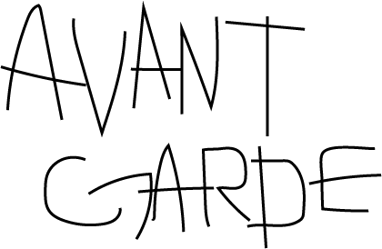
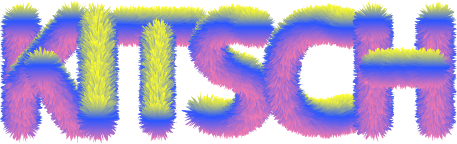

백남준아트센터는 세계적인 비디오 아티스트 고(故) 백남준 작가(1932 ~ 2006)의 작품을 소장 및 전시 하고 그의 미디어 아트를 비롯한 예술세계를 연구하기 위하여 2008년 개관한 경기도의 도립미술관입니다.
백남준은 세계적인 비디오 아트 예술가, 작곡가이자 전위 예술가로, 특히 비디오 아트라는 새로운 예술을 창안하여 발전시켰다는 평가를 받아 ‘비디오 아트 창시자’로 알려져있습니다.


purpose.
백남준 작가의 업적을 기리기위해 만들어진 미술관인 만큼 그의 작품 세계가 잘 녹아있는 디자인에 초첨을 두어 백남준 작가의 중심매체인 TV안에서 Avant-garde, Kitsch, Humor라는 특징을 선정해 디자인에 반영하였습니다. 특히, TV안에 또 다른 세계를 창조하여 각광을 받은 작가의 아이디어를 모티브로 유동성 있는 현대의 미디어 기기안에 아날로그 tv 화면 조정기를 다양한 방식으로 표현함으로써 직접 전시를 관람하지않더라도 백남준 작가의 작품세계를 들여다 볼 수 있도록 했으며, 크게 Desktop과 이동성이 용의한 Tablet,mobile 화면에 차이를 두어 디자인을 진행하였습니다.
Desktop
Tablet / Mobile
ux.
홈페이지 이용자 대부분은 현재 전시중인 것이 무엇인지, 미술관이 언제 오픈하는지를 보기 위해 홈페이지를 방문한다는 점은 감안하여 메인페이지에 미술관이 오늘 오픈했는지를 나타내는 알림 섹션을 넣고, 당일 미술관에서 관람할 수 있는 전시들을 나열해 ux적인 만족도를 높였습니다.